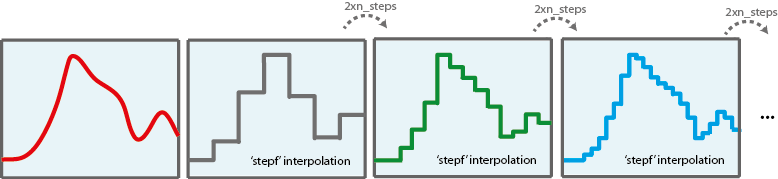
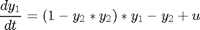
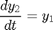
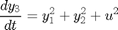
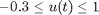
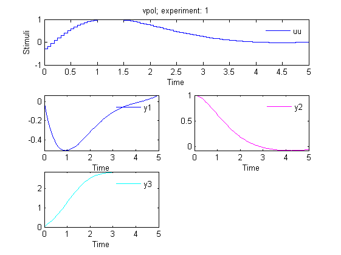

AMIGO_DO -- Dynamic Optimization with re-optimization
Contents
Re-optimization is used to iteratively smooth stimulation profiles with stepf interpolation. In this way, large control discretization levels can be achieved with reasonable computational effort. The idea is to solve the DO problem with a a coarse discretization level and from the optimal solution run the optimization with twice the discretization level. Re-optimizations can be run as many times as desired. Re-optimization is typically used in combination with local optimizers.

Options:
- 'run_identifier' to keep different folders for different runs, this avoids overwriting
- 'nlp_solver' to rapidly change the optimization method
- 'reopt' to activate ('on') re-optimization
- 'reopt_local_solver' solver for reoptimization
- 'n_reOpts' number of reoptimizations
See also
Example
The objective is to simultaneously minimize the amplitude of the oscillations and the control effort subject to the oscillator dynamics and maximum and minimum allowed values for the control :




The problem will be first solved with a discretization level of 10 steps. Re-optimizations will be performed till a final discretization of
clear; %=========================== %RESULTS PATHS RELATED DATA %=========================== inputs.pathd.results_folder='vpol'; % Folder to keep results (in Results\) inputs.pathd.short_name='vpol'; % To identify figures and reports %====================== % MODEL RELATED DATA %====================== inputs.model.input_model_type='charmodelF'; % Model type inputs.model.n_st=3; % Number of states inputs.model.n_par=0; % Number of parameters inputs.model.n_stimulus=1; % Number of stimuli inputs.model.st_names=char('y1','y2','y3'); % Names of the states inputs.model.stimulus_names=char('uu'); % Names of the stimuli inputs.model.eqns=char(... % Model 'dy1=(1-y2*y2)*y1-y2+uu',... 'dy2=y1',... 'dy3=y1*y1+y2*y2+uu*uu'); %========================================== % Dynamic optimization problem formulation %========================================== inputs.DOsol.y0=[0 1 0]; %Initial conditions inputs.DOsol.tf_type='fixed'; %Process duration type: fixed or free inputs.DOsol.tf_guess=5; %Process duration %COST FUNCTION inputs.DOsol.DOcost_type='min'; %Type of problem: max/min inputs.DOsol.DOcost='y3'; %Cost functional %CVP (Control Vector Parameterization) DETAILS inputs.DOsol.u_interp='stepf'; %Control definition %'sustained' |'stepf'|'step'|'linear'| inputs.DOsol.n_steps=10; inputs.DOsol.u_guess=0.7.*ones(1,inputs.DOsol.n_steps);% Initial guess for the input inputs.DOsol.u_min=-0.3.*ones(1,inputs.DOsol.n_steps); inputs.DOsol.u_max=1.*ones(1,inputs.DOsol.n_steps); % Minimum and maximum value for the input inputs.DOsol.t_con=0:5/inputs.DOsol.n_steps:5; % Input swithching times, including intial and % final times %================================== % NUMERICAL METHDOS RELATED DATA %================================== % SIMULATION inputs.ivpsol.ivpsolver='radau5'; inputs.ivpsol.senssolver='odessa'; inputs.ivpsol.rtol=1.0D-7; inputs.ivpsol.atol=1.0D-7; %OPTIMIZATION inputs.nlpsol.reopt='on'; % Re-optimization: 'on' | 'off' inputs.nlpsol.nlpsolver='local_ipopt'; % In this case the problem can be solved with % a local optimizer inputs.nlpsol.reopt_local_solver='local_fmincon'; % Solver used for re-optimization inputs.nlpsol.n_reOpts=3; % Number of re-optimizations % Final discretization level: 80 (2x(2x(2x10))
More information regarding the inputs used in this example can be found here.
AMIGO_Prep(inputs); AMIGO_DO(inputs);
***********************************
* AMIGO, Copyright @CSIC *
* AMIGO2_R1 [July 2013] *
***********************************
*Date: 28-Sep-2015
------>Pre processing....this may take a few seconds.
------>Checking inputs....
------> WARNING message
AMIGO_check_model: You did not specify inputs.model.exe_type, standard will be assumed
------> Generating fortran code ...
------> Mexing files....
In file D:\AMIGO2_REPO_2014\AMIGO_R2012_cvodes\Kernel\IVP_solvers\radau5\cradau5g.f:86
CALL FCNCRADAU5(NLHS,PL,NRHS,PR,A3,A5,A7,A9,A10,A13,A15,A17,
1
In file D:\AMIGO2_REPO_2014\AMIGO_R2012_cvodes\Kernel\IVP_solvers\radau5\cradau5g.f:92
SUBROUTINE FCNCRADAU5(NLHS,PL,NRHS,PR,A3,A5,A7,A9,A10,A13,A15,
2
Warning (155): Inconsistent types (INTEGER(4)/REAL(8)) in actual argument lists at (1) and (2)
In file D:\AMIGO2_REPO_2014\AMIGO_R2012_cvodes\Kernel\IVP_solvers\odessa\codessag.f:82
CALL FCNCODESSA(NLHS,PL,NRHS,PR,A3,A4,A12,A13,A15,A18,A20,
1
In file D:\AMIGO2_REPO_2014\AMIGO_R2012_cvodes\Kernel\IVP_solvers\odessa\codessag.f:88
SUBROUTINE FCNCODESSA(NLHS,PL,NRHS,PR,A3,A4,A12,A13,A15,A18,A20,
2
Warning (155): Inconsistent types (INTEGER(4)/REAL(8)) in actual argument lists at (1) and (2)
------>Files generated....
***********************************
* AMIGO, Copyright @CSIC *
* AMIGO2_R1 [July 2013] *
***********************************
*Date: 28-Sep-2015
------>Checking inputs....
The following files have been created:
ans =
D:\AMIGO2_REPO_2014\AMIGO_R2012_cvodes\Results\vpol\AMIGO_DOcost_vpol.m
ans =
D:\AMIGO2_REPO_2014\AMIGO_R2012_cvodes\Results\vpol\AMIGO_DOconst_vpol.m
*************************************************************************
------>IMPORTANT!!: Most of the optimization solvers have their own
tunning parameters (options).
Defaults have been assigned in the *NLPsolver*_options
files. You may need to modify those settings for your
particular problem, specially:
- maximum number of function evaluations /iterations,
- maximum computational time
******************************************************************
Solving the NLP problem with Local Optimizer: ipopt
Summary of selected local solver (ipopt) options:
maxeval: 500,
maxtime: 60
>Bounds on the unknowns:
v_guess(1)=0.700000; v_min(1)=-0.300000; v_max(1)=1.000000;
v_guess(2)=0.700000; v_min(2)=-0.300000; v_max(2)=1.000000;
v_guess(3)=0.700000; v_min(3)=-0.300000; v_max(3)=1.000000;
v_guess(4)=0.700000; v_min(4)=-0.300000; v_max(4)=1.000000;
v_guess(5)=0.700000; v_min(5)=-0.300000; v_max(5)=1.000000;
v_guess(6)=0.700000; v_min(6)=-0.300000; v_max(6)=1.000000;
v_guess(7)=0.700000; v_min(7)=-0.300000; v_max(7)=1.000000;
v_guess(8)=0.700000; v_min(8)=-0.300000; v_max(8)=1.000000;
v_guess(9)=0.700000; v_min(9)=-0.300000; v_max(9)=1.000000;
v_guess(10)=0.700000; v_min(10)=-0.300000; v_max(10)=1.000000;
-------------------------------
Initial value problem related active settings
-------------------------------
ivpsolver: radau5
RelTol: 1e-007
AbsTol: 1e-007
mexfile: radau5g_vpol
Local search number: 1
Call local solver: IPOPT
Initial point function value: 5.438155
This is Ipopt version 3.4.1, running with linear solver ma27.
Number of nonzeros in equality constraint Jacobian...: 0
Number of nonzeros in inequality constraint Jacobian.: 0
Number of nonzeros in Lagrangian Hessian.............: 0
Total number of variables............................: 10
variables with only lower bounds: 0
variables with lower and upper bounds: 10
variables with only upper bounds: 0
Total number of equality constraints.................: 0
Total number of inequality constraints...............: 0
inequality constraints with only lower bounds: 0
inequality constraints with lower and upper bounds: 0
inequality constraints with only upper bounds: 0
iter objective inf_pr inf_du lg(mu) ||d|| lg(rg) alpha_du alpha_pr ls
0 5.4381545e+00 0.00e+00 4.45e+00 0.0 0.00e+00 - 0.00e+00 0.00e+00 0
1 4.9243222e+00 0.00e+00 7.71e+00 -0.2 7.04e-01 - 8.40e-01 2.70e-01f 2
2 4.2564479e+00 0.00e+00 2.64e+00 -0.6 9.30e-02 - 9.92e-01 1.00e+00f 1
3 3.8683366e+00 0.00e+00 2.68e+00 -1.2 1.96e-01 - 9.93e-01 1.00e+00f 1
4 3.4939677e+00 0.00e+00 1.05e+00 -2.0 8.84e-02 - 1.00e+00 1.00e+00f 1
5 3.4506327e+00 0.00e+00 2.67e+00 -2.1 4.98e-01 - 1.00e+00 1.00e+00f 1
6 2.9927114e+00 0.00e+00 1.29e+00 -2.7 1.40e-01 - 1.00e+00 9.02e-01f 1
7 2.9440853e+00 0.00e+00 6.00e-01 -2.2 1.51e-01 - 1.00e+00 1.00e+00f 1
8 2.9287479e+00 0.00e+00 8.95e-02 -3.2 4.34e-02 - 1.00e+00 1.00e+00f 1
9 2.9267145e+00 0.00e+00 9.54e-02 -4.7 2.16e-02 - 1.00e+00 9.37e-01f 1
iter objective inf_pr inf_du lg(mu) ||d|| lg(rg) alpha_du alpha_pr ls
10 2.9262367e+00 0.00e+00 2.42e-02 -5.0 9.31e-03 - 1.00e+00 1.00e+00f 1
11 2.9262339e+00 0.00e+00 4.45e-02 -5.0 8.29e-03 - 1.00e+00 5.00e-01f 2
12 2.9262031e+00 0.00e+00 9.52e-03 -5.0 9.70e-03 - 1.00e+00 2.50e-01f 3
13 2.9261979e+00 0.00e+00 3.64e-04 -5.0 1.63e-03 - 1.00e+00 1.00e+00f 1
14 2.9261979e+00 0.00e+00 1.95e-04 -5.0 1.46e-04 - 1.00e+00 1.00e+00f 1
15 2.9261979e+00 0.00e+00 2.79e-04 -5.0 7.42e-04 - 1.00e+00 1.25e-01f 4
16 2.9261979e+00 0.00e+00 2.55e-04 -5.0 1.31e-04 - 1.00e+00 2.50e-01f 3
17 2.9261979e+00 0.00e+00 6.24e-05 -5.0 5.38e-05 - 1.00e+00 5.00e-01f 2
18 2.9261890e+00 0.00e+00 4.14e-04 -6.0 1.68e-04 - 1.00e+00 1.00e+00f 1
19 2.9261980e+00 0.00e+00 3.67e-04 -5.0 1.70e-04 - 1.00e+00 1.00e+00f 1
iter objective inf_pr inf_du lg(mu) ||d|| lg(rg) alpha_du alpha_pr ls
20 2.9261980e+00 0.00e+00 9.37e-05 -5.0 8.17e-05 - 1.00e+00 2.50e-01f 3
21 2.9261888e+00 0.00e+00 2.45e-04 -6.0 1.72e-04 - 1.00e+00 1.00e+00f 1
22 2.9261979e+00 0.00e+00 4.71e-04 -5.0 1.71e-04 - 1.00e+00 1.00e+00f 1
23 2.9261979e+00 0.00e+00 7.28e-04 -5.0 2.62e-04 - 1.00e+00 5.00e-01f 2
24 2.9261979e+00 0.00e+00 3.49e-04 -5.0 1.06e-04 - 1.00e+00 2.50e-01f 3
25 2.9261979e+00 0.00e+00 2.37e-04 -5.0 1.01e-04 - 1.00e+00 5.00e-01f 2
26 2.9261979e+00 0.00e+00 9.02e-05 -5.0 1.69e-05 - 1.00e+00 1.00e+00f 1
27 2.9261890e+00 0.00e+00 1.19e-03 -6.0 3.08e-04 - 1.00e+00 1.00e+00f 1
28 2.9261888e+00 0.00e+00 3.32e-04 -6.0 2.74e-04 - 1.00e+00 1.00e+00f 1
29 2.9261979e+00 0.00e+00 4.52e-04 -5.0 1.71e-04 - 1.00e+00 1.00e+00f 1
iter objective inf_pr inf_du lg(mu) ||d|| lg(rg) alpha_du alpha_pr ls
30 2.9261979e+00 0.00e+00 1.46e-04 -5.0 9.84e-05 - 1.00e+00 5.00e-01f 2
31 2.9261979e+00 0.00e+00 1.69e-04 -5.0 8.26e-05 - 1.00e+00 5.00e-01f 2
32 2.9261979e+00 0.00e+00 9.60e-05 -5.0 3.04e-05 - 1.00e+00 1.00e+00f 1
33 2.9261889e+00 0.00e+00 1.24e-03 -6.0 1.70e-04 - 1.00e+00 1.00e+00f 1
34 2.9261889e+00 0.00e+00 5.44e-04 -6.0 1.09e-04 - 1.00e+00 5.00e-01f 2
35 2.9261889e+00 0.00e+00 3.61e-04 -6.0 2.45e-04 - 1.00e+00 5.00e-01f 2
36 2.9261888e+00 0.00e+00 3.49e-04 -6.0 1.62e-04 - 1.00e+00 1.00e+00f 1
37 2.9261888e+00 0.00e+00 1.24e-04 -6.0 3.02e-04 - 1.00e+00 1.25e-01f 4
38 2.9261888e+00 0.00e+00 1.27e-04 -6.0 8.10e-05 - 1.00e+00 1.00e+00f 1
39 2.9261980e+00 0.00e+00 1.28e-03 -5.0 1.71e-04 - 1.00e+00 1.00e+00f 1
iter objective inf_pr inf_du lg(mu) ||d|| lg(rg) alpha_du alpha_pr ls
40 2.9261980e+00 0.00e+00 7.79e-04 -5.0 2.56e-04 - 1.00e+00 1.00e+00f 1
41 2.9261979e+00 0.00e+00 4.30e-04 -5.0 8.61e-04 - 1.00e+00 6.25e-02f 5
42 2.9261979e+00 0.00e+00 3.16e-04 -5.0 1.84e-04 - 1.00e+00 5.00e-01f 2
43 2.9261979e+00 0.00e+00 1.73e-04 -5.0 9.52e-05 - 1.00e+00 1.00e+00f 1
44 2.9261979e+00 0.00e+00 1.11e-04 -5.0 6.53e-05 - 1.00e+00 1.00e+00f 1
45 2.9261979e+00 0.00e+00 1.14e-04 -5.0 1.10e-04 - 1.00e+00 5.00e-01f 2
46 2.9261979e+00 0.00e+00 7.24e-05 -5.0 3.31e-05 - 1.00e+00 1.00e+00f 1
47 2.9261889e+00 0.00e+00 5.31e-04 -6.0 1.70e-04 - 1.00e+00 1.00e+00f 1
48 2.9261889e+00 0.00e+00 3.41e-04 -6.0 2.66e-04 - 1.00e+00 2.50e-01f 3
49 2.9261889e+00 0.00e+00 1.14e-03 -6.0 1.62e-04 - 1.00e+00 5.00e-01f 2
iter objective inf_pr inf_du lg(mu) ||d|| lg(rg) alpha_du alpha_pr ls
50 2.9261889e+00 0.00e+00 2.83e-04 -6.0 3.65e-04 - 1.00e+00 2.50e-01f 3
51 2.9261888e+00 0.00e+00 1.13e-04 -6.0 4.92e-05 - 1.00e+00 5.00e-01f 2
52 2.9261888e+00 0.00e+00 1.07e-04 -6.0 1.61e-04 - 1.00e+00 2.50e-01f 3
53 2.9261888e+00 0.00e+00 9.50e-05 -6.0 1.87e-05 - 1.00e+00 1.00e+00f 1
54 2.9261888e+00 0.00e+00 8.90e-05 -6.0 7.07e-05 - 1.00e+00 1.25e-01f 4
55 2.9261888e+00 0.00e+00 1.15e-04 -6.0 3.20e-05 - 1.00e+00 5.00e-01f 2
56 2.9261888e+00 0.00e+00 7.64e-05 -6.0 3.49e-05 - 1.00e+00 1.25e-01f 4
57 2.9261888e+00 0.00e+00 7.15e-05 -6.0 5.71e-06 - 1.00e+00 5.00e-01f 2
58 2.9261888e+00 0.00e+00 7.84e-05 -6.0 9.71e-06 - 1.00e+00 1.95e-03f 10
59 2.9261888e+00 0.00e+00 9.19e-05 -6.0 1.25e-05 - 1.00e+00 3.12e-02f 6
iter objective inf_pr inf_du lg(mu) ||d|| lg(rg) alpha_du alpha_pr ls
60 2.9261888e+00 0.00e+00 2.75e-05 -6.0 2.86e-06 - 1.00e+00 1.00e+00f 1
61 2.9261888e+00 0.00e+00 7.22e-05 -6.0 3.92e-06 - 1.00e+00 1.00e+00f 1
62 2.9261888e+00 0.00e+00 3.58e-05 -6.0 3.39e-06 - 1.00e+00 1.00e+00f 1
63 2.9261888e+00 0.00e+00 2.04e-05 -6.0 5.78e-06 - 1.00e+00 5.00e-01f 2
64 2.9261888e+00 0.00e+00 2.57e-05 -6.0 2.26e-06 - 1.00e+00 1.00e+00f 1
65 2.9261888e+00 0.00e+00 8.53e-05 -6.0 8.94e-06 - 1.00e+00 5.00e-01f 2
66 2.9261888e+00 0.00e+00 1.02e-05 -6.0 1.63e-05 - 1.00e+00 6.10e-05f 15
67 2.9261888e+00 0.00e+00 9.13e-06 -6.0 9.14e-06 - 1.00e+00 3.05e-05f 16
Number of Iterations....: 67
(scaled) (unscaled)
Objective...............: 2.9261888394128532e+00 2.9261888394128532e+00
Dual infeasibility......: 9.1332292644626277e-06 9.1332292644626277e-06
Constraint violation....: 0.0000000000000000e+00 0.0000000000000000e+00
Complementarity.........: 9.0918774069444135e-07 9.0918774069444135e-07
Overall NLP error.......: 9.1332292644626277e-06 9.1332292644626277e-06
Number of objective function evaluations = 290
Number of objective gradient evaluations = 68
Number of equality constraint evaluations = 0
Number of inequality constraint evaluations = 0
Number of equality constraint Jacobian evaluations = 0
Number of inequality constraint Jacobian evaluations = 0
Number of Lagrangian Hessian evaluations = 0
Total CPU secs in IPOPT (w/o function evaluations) = 1.053
Total CPU secs in NLP function evaluations = 0.374
EXIT: Optimal Solution Found.
Local solution function value: 2.926189
Number of function evaluations in the local search: 1051
CPU Time of the local search: 1.435353 seconds
The following files have been created:
ans =
D:\AMIGO2_REPO_2014\AMIGO_R2012_cvodes\Results\vpol\AMIGO_DOcost_reopt1_vpol.m
ans =
D:\AMIGO2_REPO_2014\AMIGO_R2012_cvodes\Results\vpol\AMIGO_DOconst_reopt1_vpol.m
>>>>> RE-OPTIMIZATION 1
*************************************************************************
------>IMPORTANT!!: Most of the optimization solvers have their own
tunning parameters (options).
Defaults have been assigned in the *NLPsolver*_options
files. You may need to modify those settings for your
particular problem, specially:
- maximum number of function evaluations /iterations,
- maximum computational time
******************************************************************
Solving the NLP problem with Local Optimizer: local_fmincon
Summary of selected local solver (local_fmincon) options:
maxeval: 500,
maxtime: 60
>Bounds on the unknowns:
v_guess(1)=0.091447; v_min(1)=-0.300000; v_max(1)=1.000000;
v_guess(2)=0.091447; v_min(2)=-0.300000; v_max(2)=1.000000;
v_guess(3)=0.830320; v_min(3)=-0.300000; v_max(3)=1.000000;
v_guess(4)=0.830320; v_min(4)=-0.300000; v_max(4)=1.000000;
v_guess(5)=0.999983; v_min(5)=-0.300000; v_max(5)=1.000000;
v_guess(6)=0.999983; v_min(6)=-0.300000; v_max(6)=1.000000;
v_guess(7)=0.915951; v_min(7)=-0.300000; v_max(7)=1.000000;
v_guess(8)=0.915951; v_min(8)=-0.300000; v_max(8)=1.000000;
v_guess(9)=0.638361; v_min(9)=-0.300000; v_max(9)=1.000000;
v_guess(10)=0.638361; v_min(10)=-0.300000; v_max(10)=1.000000;
v_guess(11)=0.366319; v_min(11)=-0.300000; v_max(11)=1.000000;
v_guess(12)=0.366319; v_min(12)=-0.300000; v_max(12)=1.000000;
v_guess(13)=0.162669; v_min(13)=-0.300000; v_max(13)=1.000000;
v_guess(14)=0.162669; v_min(14)=-0.300000; v_max(14)=1.000000;
v_guess(15)=0.039824; v_min(15)=-0.300000; v_max(15)=1.000000;
v_guess(16)=0.039824; v_min(16)=-0.300000; v_max(16)=1.000000;
v_guess(17)=-0.012880; v_min(17)=-0.300000; v_max(17)=1.000000;
v_guess(18)=-0.012880; v_min(18)=-0.300000; v_max(18)=1.000000;
v_guess(19)=-0.012997; v_min(19)=-0.300000; v_max(19)=1.000000;
v_guess(20)=-0.012997; v_min(20)=-0.300000; v_max(20)=1.000000;
Local search number: 1
Call local solver: LOCAL_FMINCON
Initial point function value: 2.926189
Max Line search Directional First-order
Iter F-count f(x) constraint steplength derivative optimality Procedure
0 21 2.92619 -1.713e-005
1 42 2.89928 0 1 -0.216 0.223
2 65 2.89203 -0.009155 0.25 -0.222 0.415
3 90 2.889 -0.01563 0.0625 -0.278 0.18
4 111 2.88175 0 1 -0.328 0.0333
5 132 2.88154 0 1 -0.0185 0.00542
6 153 2.88152 0 1 -0.00498 0.00265 Hessian modified
Local minimum possible. Constraints satisfied.
fmincon stopped because the predicted change in the objective function
is less than the selected value of the function tolerance and constraints
are satisfied to within the selected value of the constraint tolerance.
Active inequalities (to within options.TolCon = 1e-005):
lower upper ineqlin ineqnonlin
5
6
Local solution function value: 2.881523
Number of function evaluations in the local search: 154
CPU Time of the local search: 1.831916 seconds
The following files have been created:
ans =
D:\AMIGO2_REPO_2014\AMIGO_R2012_cvodes\Results\vpol\AMIGO_DOcost_reopt2_vpol.m
ans =
D:\AMIGO2_REPO_2014\AMIGO_R2012_cvodes\Results\vpol\AMIGO_DOconst_reopt2_vpol.m
>>>>> RE-OPTIMIZATION 2
*************************************************************************
------>IMPORTANT!!: Most of the optimization solvers have their own
tunning parameters (options).
Defaults have been assigned in the *NLPsolver*_options
files. You may need to modify those settings for your
particular problem, specially:
- maximum number of function evaluations /iterations,
- maximum computational time
******************************************************************
Solving the NLP problem with Local Optimizer: local_fmincon
Summary of selected local solver (local_fmincon) options:
maxeval: 500,
maxtime: 60
>Bounds on the unknowns:
v_guess(1)=-0.134436; v_min(1)=-0.300000; v_max(1)=1.000000;
v_guess(2)=-0.134436; v_min(2)=-0.300000; v_max(2)=1.000000;
v_guess(3)=0.351916; v_min(3)=-0.300000; v_max(3)=1.000000;
v_guess(4)=0.351916; v_min(4)=-0.300000; v_max(4)=1.000000;
v_guess(5)=0.705254; v_min(5)=-0.300000; v_max(5)=1.000000;
v_guess(6)=0.705254; v_min(6)=-0.300000; v_max(6)=1.000000;
v_guess(7)=0.926061; v_min(7)=-0.300000; v_max(7)=1.000000;
v_guess(8)=0.926061; v_min(8)=-0.300000; v_max(8)=1.000000;
v_guess(9)=1.000000; v_min(9)=-0.300000; v_max(9)=1.000000;
v_guess(10)=1.000000; v_min(10)=-0.300000; v_max(10)=1.000000;
v_guess(11)=1.000000; v_min(11)=-0.300000; v_max(11)=1.000000;
v_guess(12)=1.000000; v_min(12)=-0.300000; v_max(12)=1.000000;
v_guess(13)=0.944855; v_min(13)=-0.300000; v_max(13)=1.000000;
v_guess(14)=0.944855; v_min(14)=-0.300000; v_max(14)=1.000000;
v_guess(15)=0.825789; v_min(15)=-0.300000; v_max(15)=1.000000;
v_guess(16)=0.825789; v_min(16)=-0.300000; v_max(16)=1.000000;
v_guess(17)=0.688226; v_min(17)=-0.300000; v_max(17)=1.000000;
v_guess(18)=0.688226; v_min(18)=-0.300000; v_max(18)=1.000000;
v_guess(19)=0.546389; v_min(19)=-0.300000; v_max(19)=1.000000;
v_guess(20)=0.546389; v_min(20)=-0.300000; v_max(20)=1.000000;
v_guess(21)=0.414537; v_min(21)=-0.300000; v_max(21)=1.000000;
v_guess(22)=0.414537; v_min(22)=-0.300000; v_max(22)=1.000000;
v_guess(23)=0.296822; v_min(23)=-0.300000; v_max(23)=1.000000;
v_guess(24)=0.296822; v_min(24)=-0.300000; v_max(24)=1.000000;
v_guess(25)=0.199087; v_min(25)=-0.300000; v_max(25)=1.000000;
v_guess(26)=0.199087; v_min(26)=-0.300000; v_max(26)=1.000000;
v_guess(27)=0.120332; v_min(27)=-0.300000; v_max(27)=1.000000;
v_guess(28)=0.120332; v_min(28)=-0.300000; v_max(28)=1.000000;
v_guess(29)=0.061643; v_min(29)=-0.300000; v_max(29)=1.000000;
v_guess(30)=0.061643; v_min(30)=-0.300000; v_max(30)=1.000000;
v_guess(31)=0.020277; v_min(31)=-0.300000; v_max(31)=1.000000;
v_guess(32)=0.020277; v_min(32)=-0.300000; v_max(32)=1.000000;
v_guess(33)=-0.004896; v_min(33)=-0.300000; v_max(33)=1.000000;
v_guess(34)=-0.004896; v_min(34)=-0.300000; v_max(34)=1.000000;
v_guess(35)=-0.016587; v_min(35)=-0.300000; v_max(35)=1.000000;
v_guess(36)=-0.016587; v_min(36)=-0.300000; v_max(36)=1.000000;
v_guess(37)=-0.016704; v_min(37)=-0.300000; v_max(37)=1.000000;
v_guess(38)=-0.016704; v_min(38)=-0.300000; v_max(38)=1.000000;
v_guess(39)=-0.007305; v_min(39)=-0.300000; v_max(39)=1.000000;
v_guess(40)=-0.007305; v_min(40)=-0.300000; v_max(40)=1.000000;
Local search number: 1
Call local solver: LOCAL_FMINCON
Initial point function value: 2.881523
Max Line search Directional First-order
Iter F-count f(x) constraint steplength derivative optimality Procedure
0 41 2.88152 0
1 82 2.87698 0 1 -0.0743 0.0517
2 125 2.87632 0 0.25 -0.0687 0.165
3 169 2.87454 -0.003737 0.125 -0.0821 0.104
4 210 2.87116 0 1 -0.145 0.0433
5 251 2.8707 0 1 -0.0785 0.00446
6 292 2.87068 0 1 -0.00444 0.00372 Hessian modified
7 333 2.87066 0 1 -0.00292 0.000727 Hessian modified
Local minimum possible. Constraints satisfied.
fmincon stopped because the predicted change in the objective function
is less than the selected value of the function tolerance and constraints
are satisfied to within the selected value of the constraint tolerance.
Active inequalities (to within options.TolCon = 1e-005):
lower upper ineqlin ineqnonlin
9
10
11
Local solution function value: 2.870663
Number of function evaluations in the local search: 334
CPU Time of the local search: 0.710665 seconds
The following files have been created:
ans =
D:\AMIGO2_REPO_2014\AMIGO_R2012_cvodes\Results\vpol\AMIGO_DOcost_reopt3_vpol.m
ans =
D:\AMIGO2_REPO_2014\AMIGO_R2012_cvodes\Results\vpol\AMIGO_DOconst_reopt3_vpol.m
>>>>> RE-OPTIMIZATION 3
*************************************************************************
------>IMPORTANT!!: Most of the optimization solvers have their own
tunning parameters (options).
Defaults have been assigned in the *NLPsolver*_options
files. You may need to modify those settings for your
particular problem, specially:
- maximum number of function evaluations /iterations,
- maximum computational time
******************************************************************
Solving the NLP problem with Local Optimizer: local_fmincon
Summary of selected local solver (local_fmincon) options:
maxeval: 500,
maxtime: 60
>Bounds on the unknowns:
v_guess(1)=-0.266490; v_min(1)=-0.300000; v_max(1)=1.000000;
v_guess(2)=-0.266490; v_min(2)=-0.300000; v_max(2)=1.000000;
v_guess(3)=0.007190; v_min(3)=-0.300000; v_max(3)=1.000000;
v_guess(4)=0.007190; v_min(4)=-0.300000; v_max(4)=1.000000;
v_guess(5)=0.249383; v_min(5)=-0.300000; v_max(5)=1.000000;
v_guess(6)=0.249383; v_min(6)=-0.300000; v_max(6)=1.000000;
v_guess(7)=0.458787; v_min(7)=-0.300000; v_max(7)=1.000000;
v_guess(8)=0.458787; v_min(8)=-0.300000; v_max(8)=1.000000;
v_guess(9)=0.633902; v_min(9)=-0.300000; v_max(9)=1.000000;
v_guess(10)=0.633902; v_min(10)=-0.300000; v_max(10)=1.000000;
v_guess(11)=0.775216; v_min(11)=-0.300000; v_max(11)=1.000000;
v_guess(12)=0.775216; v_min(12)=-0.300000; v_max(12)=1.000000;
v_guess(13)=0.882906; v_min(13)=-0.300000; v_max(13)=1.000000;
v_guess(14)=0.882906; v_min(14)=-0.300000; v_max(14)=1.000000;
v_guess(15)=0.958973; v_min(15)=-0.300000; v_max(15)=1.000000;
v_guess(16)=0.958973; v_min(16)=-0.300000; v_max(16)=1.000000;
v_guess(17)=1.000000; v_min(17)=-0.300000; v_max(17)=1.000000;
v_guess(18)=1.000000; v_min(18)=-0.300000; v_max(18)=1.000000;
v_guess(19)=1.000000; v_min(19)=-0.300000; v_max(19)=1.000000;
v_guess(20)=1.000000; v_min(20)=-0.300000; v_max(20)=1.000000;
v_guess(21)=1.000000; v_min(21)=-0.300000; v_max(21)=1.000000;
v_guess(22)=1.000000; v_min(22)=-0.300000; v_max(22)=1.000000;
v_guess(23)=0.999035; v_min(23)=-0.300000; v_max(23)=1.000000;
v_guess(24)=0.999035; v_min(24)=-0.300000; v_max(24)=1.000000;
v_guess(25)=0.961629; v_min(25)=-0.300000; v_max(25)=1.000000;
v_guess(26)=0.961629; v_min(26)=-0.300000; v_max(26)=1.000000;
v_guess(27)=0.911180; v_min(27)=-0.300000; v_max(27)=1.000000;
v_guess(28)=0.911180; v_min(28)=-0.300000; v_max(28)=1.000000;
v_guess(29)=0.851931; v_min(29)=-0.300000; v_max(29)=1.000000;
v_guess(30)=0.851931; v_min(30)=-0.300000; v_max(30)=1.000000;
v_guess(31)=0.786513; v_min(31)=-0.300000; v_max(31)=1.000000;
v_guess(32)=0.786513; v_min(32)=-0.300000; v_max(32)=1.000000;
v_guess(33)=0.717629; v_min(33)=-0.300000; v_max(33)=1.000000;
v_guess(34)=0.717629; v_min(34)=-0.300000; v_max(34)=1.000000;
v_guess(35)=0.647119; v_min(35)=-0.300000; v_max(35)=1.000000;
v_guess(36)=0.647119; v_min(36)=-0.300000; v_max(36)=1.000000;
v_guess(37)=0.576968; v_min(37)=-0.300000; v_max(37)=1.000000;
v_guess(38)=0.576968; v_min(38)=-0.300000; v_max(38)=1.000000;
v_guess(39)=0.508313; v_min(39)=-0.300000; v_max(39)=1.000000;
v_guess(40)=0.508313; v_min(40)=-0.300000; v_max(40)=1.000000;
v_guess(41)=0.442500; v_min(41)=-0.300000; v_max(41)=1.000000;
v_guess(42)=0.442500; v_min(42)=-0.300000; v_max(42)=1.000000;
v_guess(43)=0.380126; v_min(43)=-0.300000; v_max(43)=1.000000;
v_guess(44)=0.380126; v_min(44)=-0.300000; v_max(44)=1.000000;
v_guess(45)=0.322022; v_min(45)=-0.300000; v_max(45)=1.000000;
v_guess(46)=0.322022; v_min(46)=-0.300000; v_max(46)=1.000000;
v_guess(47)=0.268391; v_min(47)=-0.300000; v_max(47)=1.000000;
v_guess(48)=0.268391; v_min(48)=-0.300000; v_max(48)=1.000000;
v_guess(49)=0.219677; v_min(49)=-0.300000; v_max(49)=1.000000;
v_guess(50)=0.219677; v_min(50)=-0.300000; v_max(50)=1.000000;
v_guess(51)=0.175824; v_min(51)=-0.300000; v_max(51)=1.000000;
v_guess(52)=0.175824; v_min(52)=-0.300000; v_max(52)=1.000000;
v_guess(53)=0.137003; v_min(53)=-0.300000; v_max(53)=1.000000;
v_guess(54)=0.137003; v_min(54)=-0.300000; v_max(54)=1.000000;
v_guess(55)=0.102994; v_min(55)=-0.300000; v_max(55)=1.000000;
v_guess(56)=0.102994; v_min(56)=-0.300000; v_max(56)=1.000000;
v_guess(57)=0.073780; v_min(57)=-0.300000; v_max(57)=1.000000;
v_guess(58)=0.073780; v_min(58)=-0.300000; v_max(58)=1.000000;
v_guess(59)=0.049063; v_min(59)=-0.300000; v_max(59)=1.000000;
v_guess(60)=0.049063; v_min(60)=-0.300000; v_max(60)=1.000000;
v_guess(61)=0.028705; v_min(61)=-0.300000; v_max(61)=1.000000;
v_guess(62)=0.028705; v_min(62)=-0.300000; v_max(62)=1.000000;
v_guess(63)=0.012378; v_min(63)=-0.300000; v_max(63)=1.000000;
v_guess(64)=0.012378; v_min(64)=-0.300000; v_max(64)=1.000000;
v_guess(65)=-0.000124; v_min(65)=-0.300000; v_max(65)=1.000000;
v_guess(66)=-0.000124; v_min(66)=-0.300000; v_max(66)=1.000000;
v_guess(67)=-0.009120; v_min(67)=-0.300000; v_max(67)=1.000000;
v_guess(68)=-0.009120; v_min(68)=-0.300000; v_max(68)=1.000000;
v_guess(69)=-0.014849; v_min(69)=-0.300000; v_max(69)=1.000000;
v_guess(70)=-0.014849; v_min(70)=-0.300000; v_max(70)=1.000000;
v_guess(71)=-0.017603; v_min(71)=-0.300000; v_max(71)=1.000000;
v_guess(72)=-0.017603; v_min(72)=-0.300000; v_max(72)=1.000000;
v_guess(73)=-0.017634; v_min(73)=-0.300000; v_max(73)=1.000000;
v_guess(74)=-0.017634; v_min(74)=-0.300000; v_max(74)=1.000000;
v_guess(75)=-0.015197; v_min(75)=-0.300000; v_max(75)=1.000000;
v_guess(76)=-0.015197; v_min(76)=-0.300000; v_max(76)=1.000000;
v_guess(77)=-0.010549; v_min(77)=-0.300000; v_max(77)=1.000000;
v_guess(78)=-0.010549; v_min(78)=-0.300000; v_max(78)=1.000000;
v_guess(79)=-0.003912; v_min(79)=-0.300000; v_max(79)=1.000000;
v_guess(80)=-0.003912; v_min(80)=-0.300000; v_max(80)=1.000000;
Local search number: 1
Call local solver: LOCAL_FMINCON
Initial point function value: 2.870663
Max Line search Directional First-order
Iter F-count f(x) constraint steplength derivative optimality Procedure
0 81 2.87066 0
1 162 2.87003 0 1 -0.026 0.00893
2 244 2.86919 0 0.5 -0.0229 0.0291 Hessian modified
3 326 2.86887 0 0.5 -0.0238 0.045
4 408 2.86827 0 0.5 -0.0366 0.0126
5 489 2.86806 0 1 -0.0127 0.00456
Local minimum possible. Constraints satisfied.
fmincon stopped because the predicted change in the objective function
is less than the selected value of the function tolerance and constraints
are satisfied to within the selected value of the constraint tolerance.
Active inequalities (to within options.TolCon = 1e-005):
lower upper ineqlin ineqnonlin
1 19
20
21
22
Local solution function value: 2.868061
Number of function evaluations in the local search: 490
CPU Time of the local search: 0.927965 seconds
----------------------------------------
>>>> DYNAMIC OPTIMIZATION:
----------------------------------------
>>>> Best objective function: min = 2.868061e+000
>>>> Best control profile:
>>>> Control u: 1
-0.300000 -0.196399 -0.058590 0.070026 0.191684 0.304069 0.409088 0.504748 0.592729 0.671421 0.742278 0.804118 0.858201 0.903744 0.941855 0.972138 0.995459 0.999826 1.000000 1.000000 1.000000 1.000000 0.999326 0.990877 0.971661 0.949401 0.924117 0.896658 0.866911 0.835759 0.802972 0.769445 0.734857 0.700086 0.664743 0.629678 0.594448 0.559859 0.525439 0.491947 0.458891 0.426968 0.395691 0.365696 0.336501 0.308687 0.281784 0.256312 0.231828 0.208789 0.186783 0.166210 0.146688 0.128562 0.111488 0.095755 0.081057 0.067633 0.055214 0.043996 0.033743 0.024611 0.016399 0.009222 0.002917 -0.002437 -0.006972 -0.010639 -0.013539 -0.015654 -0.017055 -0.017750 -0.017784 -0.017188 -0.015981 -0.014217 -0.011895 -0.009085 -0.005767 -0.002029
>>>> Switching times:
0.000000 0.062500 0.125000 0.187500 0.250000 0.312500 0.375000 0.437500 0.500000 0.562500 0.625000 0.687500 0.750000 0.812500 0.875000 0.937500 1.000000 1.062500 1.125000 1.187500 1.250000 1.312500 1.375000 1.437500 1.500000 1.562500 1.625000 1.687500 1.750000 1.812500 1.875000 1.937500 2.000000 2.062500 2.125000 2.187500 2.250000 2.312500 2.375000 2.437500 2.500000 2.562500 2.625000 2.687500 2.750000 2.812500 2.875000 2.937500 3.000000 3.062500 3.125000 3.187500 3.250000 3.312500 3.375000 3.437500 3.500000 3.562500 3.625000 3.687500 3.750000 3.812500 3.875000 3.937500 4.000000 4.062500 4.125000 4.187500 4.250000 4.312500 4.375000 4.437500 4.500000 4.562500 4.625000 4.687500 4.750000 4.812500 4.875000 4.937500 5.000000
>>>> Final time: 5.000000
>>>> Constraints violation (c<=0): Equality constraints, Inequality constraints, Control constraints
c(1)=0.00e+000;
------>Plotting results....
Sorry, convergence curve plot is not available for local solvers, at the moment
------>Results (report and struct_results.mat) and plots were kept in the directory:
Results\vpol\OD_vpol_local_ipopt_run1
Click <a href="matlab: cd('D:\AMIGO2_REPO_2014\AMIGO_R2012_cvodes\Results\vpol\OD_vpol_local_ipopt_run1')">here</a> to go to the results folder or <a href="matlab: load('D:\AMIGO2_REPO_2014\AMIGO_R2012_cvodes\Results\vpol\OD_vpol_local_ipopt_run1\strreport_vpol_run1.mat')">here</a> to load the results.
 References
Balsa-Canto, E.; Banga, J. R.; Alonso, A.A.; Vassiliadis, V.S. Dynamic optimization of chemical and biochemical processes using restricted second-order information. Compt. & Chem. Eng. 2001, 25: 539-546.
AMIGO_htmldoc_inputs(inputs,fullfile(pwd,'html','doinputsr.html'));